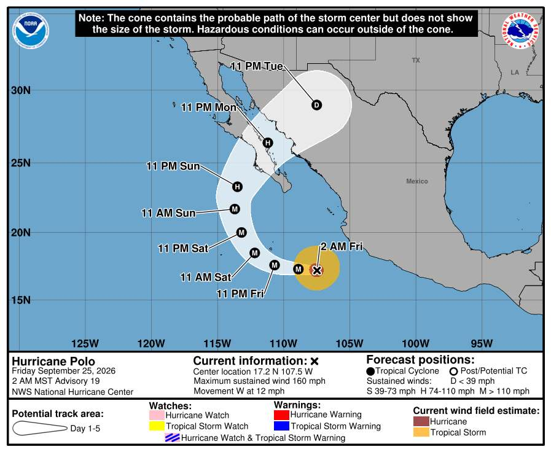
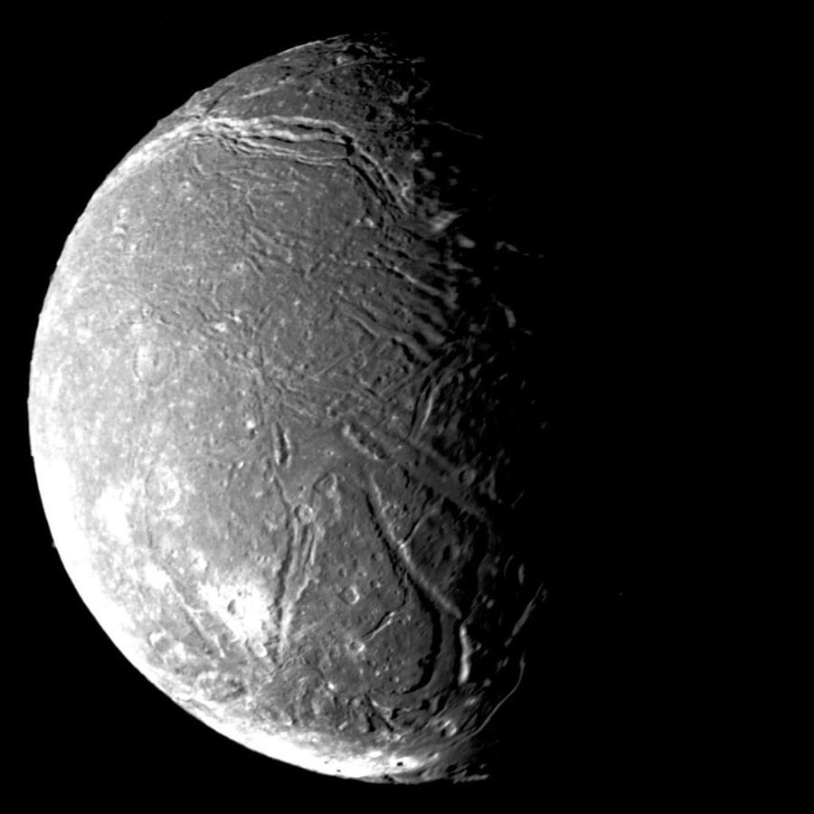
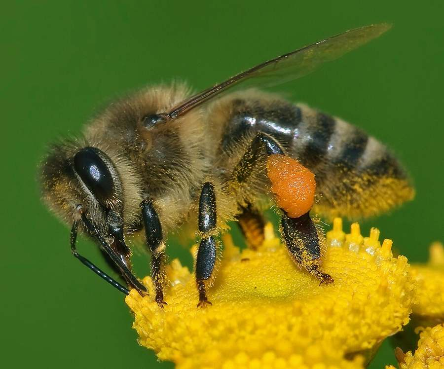

HeresThe.Joke
Today's joke
Doctor, I've broken my arm in several places.
Show me the punchline
Well, don't go to those places.
HeresThe.News
A calm daily news brief. Every fact labeled. Every source named. No ads.
HeresThe.News
This is a working prototype of a HeresThe.News redesign, built by a student team. The news is real but frozen from Friday, September 25. Some things are rough on purpose.
Try this: find out what happened with Hurricane Polo and decide whether you trust it. Open the story, check each fact's label, see which outlets covered it. Or pick your own topics first. There is no wrong order.
No ads. No bait. Just news.
Assembled by AI following strict human editorial rules. How it works
What changed Category 4 -> Category 5 (160 mph)

Why it mattersPolo weakened to Category 4 on Sept. 23 and has now regained Category 5 strength, with 160 mph sustained winds as of 9:00 UTC Friday. The National Hurricane Center forecasts the core to stay offshore of mainland Mexico and weakening to begin Saturday. CBS News, citing the Weather Prediction Center, reports 2 to 4 more inches of rain, up to 6 inches in spots, for Michoacan, Colima, Jalisco and Nayarit, and 1 to 2 inches along coastal Jalisco and Guerrero.
The facts●3 verified○2 reported
Read the full coverage
NHC Pacific AdvisoryofficialCBS NewscenterNASA Earth ObservatoryofficialYahoo News (AP/Reuters wire)wireAl Jazeerainternational
Why it mattersThe National Hurricane Center forecasts 15 to 30 inches of rain for the Big Island's southern and eastern slopes, with isolated totals up to 35 inches, and warns of catastrophic and life-threatening flash flooding and mudslides. Al Jazeera reports Hawaii's governor issued an emergency proclamation, activated more than 230 National Guard members, and that schools are closed statewide for the week.
The facts●3 verified○2 reported
Read the full coverage
CBS NewscenterAl JazeerainternationalYahoo News (AP/Reuters wire)wire
What changed 1-3 in -> 3-5 in
Why it mattersThe rainfall forecast has firmed from an early-week estimate of roughly 1 to 3 inches to the National Weather Service's 3 to 5 inches, which CNN described as up to a month's worth of rain for parts of the area. The NWS forecasts coastal wind gusts of 45 to 60 mph and has a Coastal Flood Warning in effect for the Massachusetts south coast, with the event running from Friday into Monday.
The facts●4 verified○1 reported
Read the full coverage
National Weather Service (Boston/Norton, MA forecast office)CNNleans left-centerBoston GlobeCBS News Bostoncenter
What changed Previewed visit -> visit held; CBS reports tariff truce extended 2 months
Why it mattersA visit that earlier coverage only previewed has now taken place. CBS News reports the two governments agreed to extend their existing tariff truce by two months, which would leave current tariff rates in place for now; UPI and CBS both report that no major policy breakthroughs were announced, and no agreements on Taiwan, Iran or Ukraine were disclosed.
The facts●2 verified○3 reported
Read the full coverage
What changed New: 7-day Hormuz reopening offer; uranium dilution offer
Why it mattersEarlier coverage reported only that sidelines talks had resumed; Iran's foreign minister has now attached a seven-day timeline to reopening the Strait of Hormuz and restarting nuclear talks, contingent on conditions he tied to the June memorandum. The strait normally carries about a fifth of global oil supply, and preliminary ship-tracking data cited by CNBC counted nine vessel transits on Sept. 25.
The facts●1 verified○4 reported
Read the full coverage
Why it mattersNepal's disaster authority reports 1,453 people killed, about 5,500 still missing and 13,795 rescued. Al Jazeera reports the government's preliminary damage estimate at $5 billion, a $20 million request from the UN loss-and-damage fund as a grant rather than a loan, and a separate $31 million US pledge for recovery.
The facts●4 verified○1 reported
Read the full coverage
Al JazeerainternationalDeutsche Welleinternational
What changed Localized clashes -> multi-front offensive; army casualty claims disputed between wires
Why it mattersFighting previously reported as localized clashes is now described in wire reporting as a coordinated offensive into the Afar and Amhara regions, with three airports taken on Sept. 23. Ethiopia's army says it repelled the offensive; one wire account cites 272 fighters killed and about 260 wounded, another cites more than 500 killed, wounded or captured, and neither outlet could verify the figures. NetBlocks recorded a network disruption in northern Ethiopia on Sept. 24-25 and said it could not determine the cause.
The facts●1 verified○3 reported◐1 disputed
Read the full coverage
Deutsche WelleinternationalThe Guardianleans leftAl JazeerainternationalFrance24 (citing NetBlocks)
Why it mattersDozens of delegates left the hall as Netanyahu began speaking, and he and New York's mayor exchanged public accusations through the podium and a written statement. No policy announcement or change accompanied the speech.
The facts●4 verified○1 reported
Read the full coverage
BBC NewsinternationalPBS NewsHourleans left-centerUPIwire
Why it mattersThe visit runs Friday through Monday across Paris, Lourdes and Metz. Scheduled events include a speech on artificial intelligence at UNESCO, a prayer vigil for about 80,000 young people at the Stade de France on Friday evening, and a private meeting in Lourdes on Sunday with survivors of clergy sexual abuse.
The facts●4 verified○1 reported
Read the full coverage
BBC NewsinternationalAl JazeerainternationalThe Guardianleans left
What changed Appeals-court block -> emergency application at Supreme Court
Why it mattersAn appeals-court block reported earlier has moved to the Supreme Court, where the solicitor general asked the justices on Sept. 24 to let third-country deportations resume immediately. The AP reports the block forced cancellation of a flight carrying 70 people from Louisiana to Burundi, Rwanda and the Central African Republic. The Court's decision will determine whether DHS can remove people to countries other than the one named in their removal order without advance notice.
The facts●2 verified○3 reported
Read the full coverage
PBS NewsHourleans left-centerBoston.com (AP)wireReason (Volokh Conspiracy)libertarianThe Hillcenter
Why it mattersRiverside County election officials are set to regain custody of the more than 650,000 ballots held by the sheriff's office since February. The court ordered the materials returned immediately, and Bianco said he will comply.
The facts●2 verified○3 reported
Read the full coverage
CBS NewscenterUPIwireYahoo News (AP wire)wire
What changed Passes restored WH-wide by 9:45 a.m. -> CNN, MS NOW reporters barred that evening from Xi dinner
Why it mattersA federal judge's order restoring CNN, MS NOW and Politico's White House passes did not end the access dispute. The White House told the court that passes were restored by 9:45 a.m. Thursday, but CNN and MS NOW journalists were turned away that evening from the Xi state dinner arrival. Four broadcast networks had pulled their pool coverage earlier in the day and had not resumed it, leaving no live network feed of the arrival.
The facts●4 verified○1 reported
Read the full coverage
BBC NewsinternationalYahoo News (wire)wireUPIwireReason (Volokh Conspiracy)libertarian
Why it mattersFamilies connected to the Lincoln strike group now have an official Navy account: eight suicide attempts and no deaths by suicide during a deployment that ran nearly nine months without a scheduled port call. Navy Times reports sailors described waits of several weeks for routine mental health appointments unless they reported suicidal thoughts.
The facts●3 verified○2 reported
Read the full coverage
PBS NewsHourleans left-centerNavy TimesSen. Kirsten Gillibrand press release
Why it mattersCopenhaver is the second person shot at the July 2024 Butler rally to die; volunteer firefighter Corey Comperatore was killed that day. Pennsylvania's attorney general attributes the death to complications of the wounds, while ABC News reports the county medical examiner had not finalized a cause of death as of Sept. 25. UPI reports the negligence lawsuit he and his wife filed against the federal government remains pending.
The facts●2 verified○3 reported
Read the full coverage
CBS NewscenterUPIwireABC News (via Yahoo)wire
Why it mattersThe resolution's defeat leaves U.S. military action against Iran in place without a congressional directive to end it. AP reports the war has killed 19 U.S. service members over more than 200 days and cost about $40 billion; those figures come from AP alone.
The facts●2 verified○3 reported
Read the full coverage
UPIwireYahoo News (AP wire)wire
Why it mattersWithout Senate action, current federal rules for approving energy and infrastructure projects stay in place at least until after the Nov. 3 midterms. The House-passed bill on data-center electricity costs, which passed 417-3, remains without a Senate vote.
The facts●4 verified○1 reported
Read the full coverage
Deseret Newsfaith pressRoll CallCBS Newscenter
Why it mattersThe bill has no legal effect unless Congress passes it, so AI development in the US is unchanged for now. If enacted, it would bar companies from building or deploying AI systems that exceed human cognitive performance, with prison terms of up to 20 years and corporate dissolution as penalties.
The facts●4 verified○1 reported
Read the full coverage
PoliticoPoliticoSen. Bernie Sanders official press releaseRep. Greg Casar official press releaseNBC NewsWashington Examinerleans right
Why it mattersLocal media reports cited by CNBC say draft rolls show roughly 130 million voters deleted; if that figure holds, those voters would need to verify or re-register to vote. CJP says it will begin nationwide protests on Oct. 2 if the chief election commissioner does not resign by Sept. 26.
The facts●3 verified○2 reported
Read the full coverage
CNBCmarketsDeutsche Welleinternational
What changed Freddie Mac 30-year: 6.95% -> 7.03%
Why it mattersFreddie Mac's weekly average rose from 6.95% to 7.03%, a fifth straight weekly increase and the first reading at or above 7% since the week ending Jan. 16, 2025. Rates remain below the 25-year high of 7.79% set in October 2023. CNN, citing Mortgage Bankers Association data, reports purchase applications were down 11% from a year earlier.
The facts●3 verified○2 reported
Read the full coverage
What changed 10-year 4.94% -> 5.18%; 30-year 5.29% -> 5.47% (week to Sept. 24)
Why it mattersThe 30-year Treasury yield closed at 5.47% and the 10-year at 5.18% on Sept. 24, up from 5.29% and 4.94% a week earlier. Treasury yields are the benchmark used to price many mortgages and other long-term loans.
The facts●3 verified○2 reported
Read the full coverage
U.S. Treasury DepartmentofficialCNBCmarketsCNBCmarketsKiplingermarkets
What changed $6.285 -> $6.529/gal (EIA, week of 9/21)
Why it mattersThe national average diesel price rose from $6.285 to $6.529 a gallon in the week ending Sept. 21, per EIA data. EIA figures put that about 74% above a year earlier; AAA's series, cited by NPR, puts the increase at 80%. NPR reports fertilizer prices are up about 15% year over year, citing the American Farm Bureau Federation.
The facts●1 verified○4 reported
Read the full coverage
PBS NewsHourleans left-centerNPRleans left-centerU.S. Energy Information Administration
Why it mattersThe rules would set the requirements for how Fed-supervised banks can issue dollar-pegged stablecoins, including full backing by permitted reserve assets such as short-term Treasury bills. Banks, issuers and the public have 60 days after Federal Register publication to file comments before the rules are finalized.
The facts●4 verified○1 reported
Read the full coverage
Federal Reserve BoardofficialFederal Reserve Board (Barr statement)officialCoinDesk
Why it mattersThe order permanently blocks Brown from working at or with any FDIC-insured bank or bank holding company unless the Fed grants written approval. Customers of Sandy Spring Bank, now part of Atlantic Union Bank, do not need to take any action.
The facts●5 verified
Read the full coverage
Federal Reserve BoardofficialFederal Reserve Board (Order of Prohibition, Docket No. 26-045-E-I)official
Why it mattersThe two governments discussed setting up a "U.S.-China AI Dialogue," with the U.S. proposing a system for notifying each other of serious AI incidents. No agreement was announced, so nothing changes yet for AI products or the people who use them.
The facts●3 verified○2 reported
Read the full coverage
CNBCmarketsBBC WorldinternationalPBS NewsHourleans left-center
Why it mattersMuse Charm lets a user start Meta's AI assistant with a fingerprint press instead of picking up a phone. Meta has not said what the device will cost when it ships in December. The Muse app stays free, and Meta says it plans to earn money by taking a fee on transactions the assistant completes for users.
The facts●4 verified○1 reported
Read the full coverage
Ars Technica (Financial Times)trade pressCNBCmarketsTechCrunchtrade press
Why it mattersUS Pixel 11 owners with a paid Gemini subscription and enrollment in the Phone by Google Public Beta can have the assistant place calls to businesses, and can take over the call at any point. The feature is an early preview and is not available on other phones or to free users.
The facts●3 verified○1 reported
Read the full coverage
The Vergetrade pressTechCrunchtrade press
Why it mattersThis is an engineering test rather than a commercial service, so it does not change AI pricing or availability for users. Google says the results will inform the two custom satellites it still plans to launch in 2027.
The facts●3 verified○2 reported
Read the full coverage
Ars Technicatrade pressThe Vergetrade press
Why it mattersThe CDC's national page lists one 2026 measles death; Pennsylvania's health department reports four measles-associated deaths in the state since Aug. 25. Neither agency has said which death the federal count reflects, and the two use different definitions. The CDC counted 3,471 confirmed cases nationally as of Sept. 17, about 95% of them linked to identified outbreaks.
The facts●2 verified○3 reported
Read the full coverage
CDC Measles Cases and Outbreaks (official)NBC NewsWashington Timesleans rightWashington Post
Why it mattersThe hearing is a step toward confirming the next FDA commissioner, who oversees U.S. regulation of vaccines, prescription drugs including mifepristone, and medical devices. Overton affirmed the safety of the MMR vaccine and said mifepristone has met FDA standards, without committing to any action on the drug's status.
The facts●4 verified○1 reported
Read the full coverage
UPIwireScientific AmericanCNNleans left-center
Why it mattersFor the 10% to 15% of patients who see little or no weight loss on GLP-1 drugs, doctors cannot yet predict in advance who will respond. Researchers are examining sex, menopausal hormone therapy and genetics as possible explanations; no test exists to match a patient to the treatment most likely to work.
The facts●2 verified○3 reported
Read the full coverage
NatureofficialEndocrine Society
Why it mattersThe study reports that children diagnosed with ADHD or autism in Denmark in 2020-2022 resembled the general population more closely, on birth weight and household income, than those diagnosed a decade earlier. The authors say part of the rise in diagnoses may reflect changes in who gets identified rather than only a change in how common the conditions are.
The facts●3 verified○1 reported
Read the full coverage
ScienceDailyofficialJAMA PsychiatryEurekAlert (ISGlobal press release)
Why it mattersThe structures are free and public, letting researchers anywhere - including labs without expensive imaging equipment - examine the predicted shapes of proteins from viruses including those causing mpox, measles and hepatitis B. The data are predictions: EMBL-EBI says they cannot show the effect of mutations, and any practical use still has to be confirmed in a laboratory.
The facts●3 verified○2 reported
Read the full coverage
Why it mattersThe study documents a chemical route cells can use to make cysteine when their usual system is disabled. Schmidt's suggestion that blocking the pathway could make cancer treatments more effective is a hypothesis stated in the university's press materials, not a tested result; any therapy would require further research and clinical testing.
The facts●3 verified○2 reported
Read the full coverage
ScienceDailyofficialEurekAlert!phys.orgNature Chemical Biologyofficial
Why it mattersThe finding has no effect on daily life. It documents a white dwarf driving a long-lasting outflow that the known mechanisms do not account for, which the authors say will direct follow-up observations of similar stellar remnants.
The facts●5 verified
Read the full coverage
ScienceDailyofficialESO (European Southern Observatory)officialSci.NewsNature Astronomyofficial
Why it mattersThe measurement gives modelers a figure for the magnetic field strength present as the Solar System formed, which the authors say should be included alongside gravity when simulating how stars and planets take shape.
The facts●3 verified○1 reported
Read the full coverage
ScienceDailyofficialMIT NewsSciTechDaily

Why it mattersThe finding is a modeled inference from surface geology and orbital mechanics, not a direct detection; no spacecraft has visited Ariel since Voyager 2's 1986 flyby. It adds Ariel to the list of icy moons thought to have held hidden oceans, one factor scientists weigh when planning future missions.
The facts●3 verified○2 reported
Read the full coverage
ScienceDailyofficialPlanetary Science InstituteofficialEos (AGU)phys.org
Final scores — Thursday, September 24
Which leagues do you follow? Tap them in the order you want.
Read the full coverage
ESPN MLB scoreboardsports deskESPN WNBA scoreboardsports deskESPN NFL scoreboardsports deskESPN NHL scoreboardsports deskESPN College scoreboardsports desk
Why it mattersThe White Sox will play in the American League wild-card round, one year after completing a three-season stretch of 324 losses that included a 121-loss season, the post-1900 record.
The facts●2 verified○1 reported
Read the full coverage
ESPNsports desk
Why it mattersCrow-Armstrong finished the season with 45 home runs and 40 stolen bases, the seventh 40-40 season in MLB history. ESPN reports the Cubs clinched a playoff berth the same day.
The facts●2 verified○3 reported
Read the full coverage
Why it mattersThe Falcons won their first game of the season, having scored 16 combined points in their first two games, in Penix's first appearance since he tore an ACL in Week 11 last season.
The facts●4 verified○1 reported
Read the full coverage
Why it mattersFour new tracks are now available as part of "The Life of a Showgirl: The Encore." Pitchfork reports a video for "Patient Zero," featuring Colin Farrell and Dakota Johnson, is set to premiere at the MTV Video Music Awards on Sept. 28.
The facts●1 verified○3 reported
Read the full coverage
Why it mattersU2's 16th studio album arrives Nov. 13, nine years after "Songs of Experience." Pitchfork and Billboard report the closing track "Torn" carries what the band describes as Dolly Parton's last recorded vocal performance.
The facts●2 verified○3 reported
Read the full coverage
Why it mattersThe group's original lineup - Mutya Buena, Keisha Buchanan and Siobhan Donaghy - has recorded a full album together for the first time in 26 years. Pitchfork reports it is due in 2027; the first single, "Ghost," is out now.
The facts●1 verified○2 reported
Read the full coverage
Why it mattersThe judging panel and host are set for season 25, which Billboard reports will premiere on ABC in 2027 with no date announced yet. Applications for auditions close Oct. 9.
The facts●2 verified○3 reported
Read the full coverage
Box office — Wednesday, September 23
Studios usually report a day's domestic numbers by the next afternoon, so the freshest complete chart each morning is from the day before. International grosses arrive on a slower, often weekly schedule.
Read the full coverage
Why it mattersDeadline reports Thursday preview grosses of $3 million or more for Avengers: Endgame: Encore, $2-3 million for Primetime, about $1.8 million for Heart of the Beast and $800,000 to $1 million for Forgotten Island. Every opening-weekend figure in this story is a Deadline projection rather than a result; actual weekend totals are reported Sunday.
The facts○5 reported
Read the full coverage
Deadlinetrade press
Why it matters"The Lost Children of Tuam" opens in Ireland this week and in the UK next month. The Guardian reports forensic archaeologists have recovered the remains of 99 babies and children since excavation began last year at the site where 796 infants are believed to be buried.
The facts○5 reported
Read the full coverage
The Guardianleans left
Why it mattersDenmark's entry goes into the pool of national submissions from which the Academy will pick nominees for Best International Feature at the 99th Academy Awards. Nominees have not been announced.
The facts●2 verified○2 reported
Read the full coverage
HeresThe.Joke
Doctor, I've broken my arm in several places.
Well, don't go to those places.
HeresThe.Quote
It is the individual who can and does make a difference even in this increasingly populous, complex world of ours.
— Sandra Day O'Connor, The Majesty of the Law: Reflections of a Supreme Court Justice, 2003
